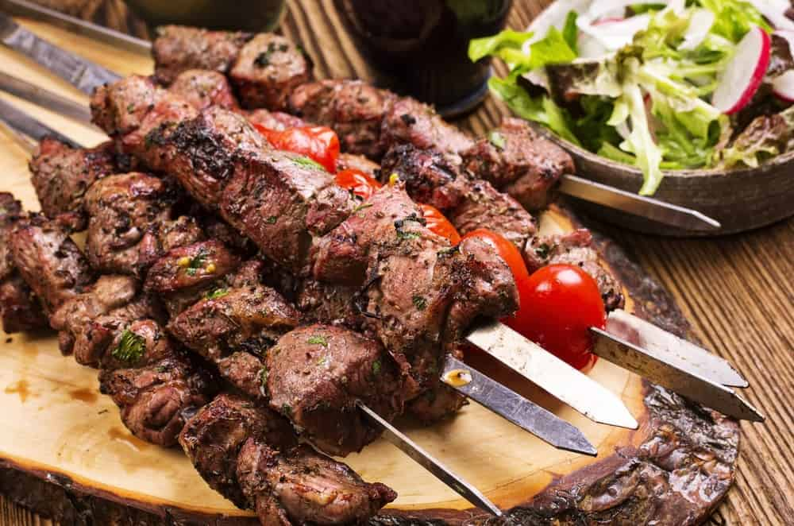

Lamb Souvlaki

Souvlaki is marinated pork, chicken, beef, or lamb grilled on a skewer. It's typically served on a skewer, but you can also eat it in a warm pita or over salad. Gyros are made with stacked meat (usually pork, but other meats are common) that has been cooked on a vertical rotisserie.
Steps
- Whisk olive oil, lemon juice, red wine vinegar, oregano, garlic, salt, and pepper together in a medium bowl. Add cubed lamb and stir until lamb is coated with marinade. Cover and refrigerate 3 hours, or overnight.
- Preheat an outdoor grill for medium-high heat and lightly oil the grate.
- Thread marinated lamb onto skewers, reserving any remaining marinade. Grill skewers until desired doneness, 10 to 12 minutes, basting with the reserved marinade and turning occasionally for even cooking.